측량및지형공간정보산업기사 (2014-03-02 기출문제)
1과목: 응용측량
1. 하나의 터널을 완성하기 위해서는 계획, 설계, 시공 등의 작업과정을 거쳐야 한다. 다음 중 터널의 시공과정 중에 주로 이루어지는 측량은?
- 지형측량
- 터널 외 기준점 측량
- 세부측량
- 터널 내 측량
(정답률: 89%)

2. 클로소이드 곡선에 대한 설명으로 옳은 것은?
- 클로소이드의 모양은 하나 밖에 없지만 매개변수 A를 바꾸면 크기가 다른 무수한 클로소이드를 만들 수 있다.
- 클로소이드는 길이를 연장한 모양이 목걸이 모양으로 연주곡선이라고도 한다.
- 매개변수 A=100m의 클로소이드를 1000분의 1도면에 그리기 위해서는 A = 10m인 클로소이드를 그려 넣으면 된다.
- 클로소이드 요소에는 길이의 단위를 가진 것과 면적의 단위를 가진 것으로 나눠진다.
(정답률: 80%)
3. 해수면이 약최고고조면(일정기간 조석을 관측하여 분석한 결과 가장 높은 해수면)에 이르렀을 때의 육지와 해수면의 경계를 조사하는 측량은?
- 지형측량
- 지리조사
- 수심측량
- 해안선조사
(정답률: 89%)
4. 교점의 위치가 기점으로부터 330.264m, 곡선반지름 R=300m, 교각 I=45°인 단곡선을 편각법으로 측설하고자 할 때 시단현에 대한 편각은? (단, 중심말뚝의 간격 = 20m)
- 1° 10′ 26″
- 1° 20′ 13″
- 1° 20′ 56″
- 1° 25′ 35″
(정답률: 75%)
5. 하천측량시 유제부에서 평면측량의 범위로 가장 적당한 것은?
- 제외지 이내
- 제외지 및 제내지에서 100m이내
- 제외지 및 제내지에서 300m이내
- 제내지 400m 이내
(정답률: 74%)
6. 지하시설물의 관측방법 중 지구자장의 변화를 관측하여 자성체의 분포를 알아내는 방법은?
- 전자관측법
- 자기관측법
- 전기관측법
- 탄성파관측법
(정답률: 85%)
7. 터널 내에서 차량 등에 의하여 파손되지 않도록 콘크리트등을 이용하여 만든 중심말뚝을 무엇이라 하는가?
- 도갱
- 자이로(gyro)
- 레벨(level)
- 도벨(dowel)
(정답률: 85%)
8. 곡선반지름 R=500m, 교각 I=50°인 단곡선을 설치하려고 할 때, 접선길이(T.L)는?
- 218.17m
- 233.15m
- 422.62m
- 436.33m
(정답률: 81%)
9. 시설물의 경관을 수직사각(θv)에 의하여 평가하는 경우, 시설물이 경관의 주제가 되고 쾌적한 경관으로 인식되는 수직시각의 범위로 가장 적합한 것은?
- 0° ≤ θv ≤ 15
- 15° ≤ θv ≤ 30
- 30° ≤ θv ≤ 45
- 45° ≤ θv ≤ 60
(정답률: 76%)
10. 도로의 중심선을 따라 20m 간격의 종단측량을 실시하여 표와 같은 결과를 얻었다. 측점1과 측점3의 지반고를 연결하는 도로 계획선을 설정한다면 이 계획선의 경사는?
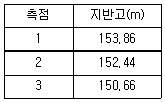
- -1.6%
- -3.2%
- -4.0%
- -8.0%
(정답률: 49%)
11. 하천측량에서 횡단면도의 작성에 필요한 측량으로 하천의 수면으로부터 하저까지의 깊이를 구하는 측량은?
- 유속측량
- 유량측량
- 양수표 수위관측
- 심천측량
(정답률: 87%)
12. 지형의 체적계산법 중 단면법에 의한 계산법으로서 비교적 가장 정확한 결과를 얻을 수 있는 것은?
- 점고법
- 중앙 단면법
- 양 단면 평균법
- 각주공식에 의한 방법
(정답률: 77%)
13. 노선측량에서 우리나라의 철도에 주로 이용되는 완화곡선은?
- 렘니스케이트
- 클로소이드
- 3차포물선
- 2차포물선
(정답률: 74%)
14. 배횡거법으로 다각형의 면적을 계산하고자 할 때 필요하지 않은 것은?
- 전 측선의 배횡거
- 전 측선의 위거
- 전 측선의 경거
- 그 측선의 위거
(정답률: 73%)
15. 대단위 지역이나 지형의 기복이 심한 지역의 토공량 산정에 적합한 방법은?
- 단편법
- 영선법
- 등고선법
- 수치지형모형법(DTM법)
(정답률: 74%)
16. 노선측량에서 중심선측량에 대한 설명 중에서 거리가 먼 것은?
- 현장에서 교점 및 곡선의 접선을 결정한다.
- 접선교각을 실측하고 주요점, 중간점 등을 설치한다.
- 지형도에 비교노선을 기입하고 평면선형을 검토 결정한다.
- 지형도에 의해 중심선의 좌표를 게산하여 현장에 설치한다.
(정답률: 65%)
17. 하천측량에서 수심 H인 하천의 수면으로부터 0.2H, 0.6H, 0.8H인 지점의 유속을 측정한 결과 각각 0.534m/s, 0.486m/s, 0.398ms이었다면 2점법(A)과 3점법(B)으로 계산한 값은?
- A=0.466m/s, B=0.473m/s
- A=0.466m/s, B=0.476m/s
- A=0.510m/s, B=0.473m/s
- A=0.510m/s, B=0.476m/s
(정답률: 70%)
18. 그림과 같은 단면의 면적은?
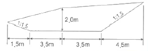
- 6.45m2
- 13.25m2
- 20.00m2
- 26.75m2
(정답률: 68%)
19. 터널측량에 관한 설명으로 옳지 않은 것은?
- 터널측량은 터널 외 측량과 터널 내 측량, 터널 내외 연결측량으로 나눌 수 있다.
- 터널의 길이, 방향은 삼각측량 또는 트래버스측량으로 정한다.
- 터널 내의 수준측량은 정확도를 위해 레벨과 수준척에 의한 직접수준측량으로만 측정한다.
- 터널 내 측량에서는 기계의 십자선, 표척눈금 등에 조명이 필요하다.
(정답률: 79%)
20. 어떤 지역의 면적을 구할 때 그림과 같이 경계선이 곡선으로 되어 있었을 때 심프슨 제1법칙에 의하여 면적을 구하는 식으로 옳은 것은?
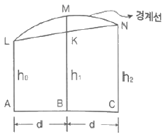
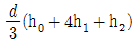
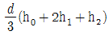
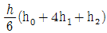
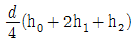
(정답률: 72%)
2과목: 사진측량 및 원격탐사
21. 초점거리 88mm의 항공사진이 5°의 경사각을 가지고있다. 이 사진 상에서 연직점과 주점 사이의 거리는? (단, 연직점은 사진 중심점으로부터 방사선 상에 있다.)
- 30.8mm
- 15.4mm
- 7.7mm
- 3.8mm
(정답률: 57%)
22. 항공사진의 기복변위에 대한 설명으로 옳지 않은 것은?
- 촬영고도에 비례한다.
- 지형지물의 높이에 비례한다.
- 연직점으로부터 상점까지의 거리에 비례한다.
- 표고차가 있는 물체에 대한 사진 중심으로부터의 방사상 변위를 말한다.
(정답률: 66%)
23. 원자력발전소의 온배수 영향을 모니터링 하고자 할 때 다음 중 가장 적합한 위성영상 자료는?
- SPOT 위성의 HRV영상
- Landsat 위성의 ETM+영상
- IKONOS 위성영상
- Radarsat 위성의 SAR 영상
(정답률: 78%)
24. 촬영고도 1000m에서 촬영된 항공사진에서 기선길이가 90mm, 건물의 시차차가 1.62mm일 때 건물의 높이는?
- 5.5m
- 18.0m
- 26.0m
- 100.0m
(정답률: 68%)
25. 항공사진 판독에 대한 설명 중 옳지 않은 것은?
- 사진판독은 사진면으로부터 얻어진 여러 가지 대상물의 정보 중 특성을 목적에 따라 해석하는 기술이다.
- 사진판독의 요소는 모양, 음영, 색조, 형상, 질감 등이 있다.
- 사진의정확도는 사진상의 변형, 생족, 형상 등 제반요소의 영향을 고려해야 한다.
- 사진판독의 요소로서 위치 상호관계 및 과고감 등은 고려하여서는 안 된다.
(정답률: 79%)
26. 초점거리가 15cm인 광각카메라로 촬영고도 3000m에서 190km/h로 촬영할 때 사진노출점간 최소소요시간은? (단, 사진의 크기는 18cm × 18cm, 종중복도 60%)
- 24초
- 27초
- 30초
- 33초
(정답률: 59%)
27. 표정 중 종시차를 소거하여 목표지형물의 상대적 위치를 맞추는 작업은?
- 접합표정
- 내부표정
- 절대표정
- 상호표정
(정답률: 66%)
28. 축척이 1 : 5000인 항공사진을 1200dpi로 스캐닝하여 생성된 영상에서 한 픽셀의 실제크기(공간해상도)는?
- 5.25cm
- 10.58cm
- 21cm
- 42cm
(정답률: 38%)
29. 사진측량으로 지형도를 제작할 때 필요하지 않은 공정은?
- 사진촬영
- 기준점측량
- 세부도화
- 수정모자이크
(정답률: 77%)
30. 항공사진에서 초점거리가 의미하는 것은?
- 사진의 음화면과 양화면의 거리
- 사진면상에서 지표간의 거리
- 카메라의 투영 중심에서 화면까지의 수선거리
- 사진면에서 기준면에 이르는 거리
(정답률: 81%)
31. 표정에 사용되는 각 좌표축별 회전인자기호가 옳게 짝지어진 것은?
- X축회전 - ω, Y축회전 - k, Z축회전 - ø
- X축회전 - k, Y축회전 - ø, Z축회전 - ω
- X축회전 - ø, Y축회전 - ω, Z축회전 - k
- X축회전 - ω, Y축회전 - ø, Z축회전 - k
(정답률: 72%)
32. 다음 중 측량용 항공사진의 내부표정 수행 시 내부표정이 불가능한 경우는?
- 3개의 사진지표(fiducal mark)만 식별이 가능한 경우
- 사진기 검증 데이터가 없는 경우
- 좌표측정기의 좌표축이 정확하게 수직이 아닌 경우
- 필름이 수축에 의해 변형이 발생한 경우
(정답률: 68%)
33. 위성영상을 활용하여 수치표고모델(DEM)을 생성하는 순서로 옳은것은?
- 입체 영상 획득 → 영상 정합 → 카메라 모델링 → 높이값 보간 → DEM 생성
- 입체 영상 획득 → 높이값 보간 → 카메라 모델링 → 영상 정합 → DEM생성
- 입체 영상 획득 → 카메라 모델링 → 영상 정합 → 높이값 보간 → DEM 생성
- 입체 영상 획득 → 카메라 모델링 → 높이값 보간 → 영상 정합 → DEM생성
(정답률: 54%)
34. 다음은 어느 지역의 영상과 동일한 지역의 지도이다. 이 자료를 이용하여 “논”의 훈련진역(training field)을 선택한 결과로 적당한 것은?
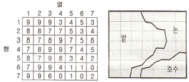
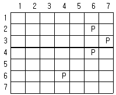
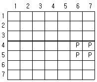
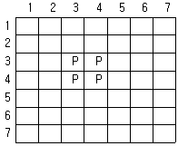
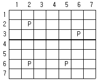
(정답률: 82%)
35. 회전주기가 일정한 인공위성을 이용하여 영상을 취득하는 경우에 대한 설명으로 옳지 않은 것은?
- 관측이 좁은 시야각으로 행하여지므로 얻어진 영상은 정사투영영상에 가깝다.
- 관측영상이 수치적 자료이므로 판독이 자동적이고 정량화가 가능하다.
- 회전 주기가 일정하므로 반복적인 관측이 가능하다.
- 필요한 시점의 영상을 신속하게 수신할 수 있다.
(정답률: 63%)
36. 정사투영 사진지도의 특징으로 틀린 것은?
- 지도와 동일한 투영법으로 생성한다.
- 사진을 수치형상모형에 두영하여 생성한다.
- 사진을 2차원 좌표변환하여 생성한다.
- 지표면의 비고에 의한 변위가 제거되었다.
(정답률: 57%)
37. 수치영상처리 기법 중 특정 추출과 판독에 도움이 되기위하여 영상의 가시적 판독성을 증강시키기 위한 일련의 처리과정을 무엇이라 하는가?
- 영상분류(image classification)
- 정사보정(ortho-rectification)
- 자료융합(data merging)
- 영상강조(image enhancement)
(정답률: 58%)
38. 레이저 스캐너와 GPS/INS로 구성되어 수치표고모델(DEM)을 제작하기에 용이한 측량시스템은?
- LIDAR
- PADAR
- SAR
- SLAR
(정답률: 75%)
39. 항공사진의 축척(scale)에 대한 설명으로 옳은 것은?
- 카메라의 초점거리에 비례, 비행고도에 반비례
- 카메라의 초점거리에 반비례, 비행고도에 비례
- 카메라의 초점거리와 비행고도에 반비례
- 카메라의 초점거리와 비행고도에 비례
(정답률: 68%)
40. 어떤 지역을 축척 1 : 30000로 초점거리 15cm, 사진의 크기 23cm × 23cm , 종중복도 60%, 횡중복도30% 인 항공사진을 촬영하였다. 이 항공 사진의 기선고도비는?
- 1.63
- 0.82
- 0.61
- 0.16
(정답률: 57%)
3과목: GIS 및 GPS
41. 위성항법시스템(GNSS:global navigation satellite system)의 종류가 아닌 것은?
- GPS
- SPS
- GLONASS
- GALILEO
(정답률: 85%)
42. 주어진 Sido 테이블에 대해 아래와 같은 SQL 문에 의해 얻어지는 결과는?
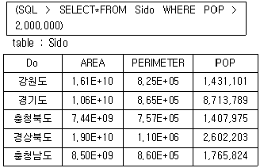
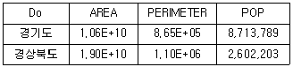
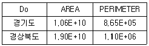
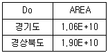
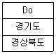
(정답률: 77%)
43. GPS의 위치 결정원리에 대한 설명으로 옳은 것은?
- 관측점의 위치좌표가 (x, y, z)이므로 2개의 위성에서 전파를 수신하여 관측점의 위치를 구한다.
- 위성궤도에 대해 종방향으로는 정사투영, 횡방향으로는 중심투영에 의해 영상이 취득된 후 3차원 위치해석을 한다.
- 관측점 좌표(x, y, z)와 시간 t의 좌표 결정방식으로 4개이상의 위성에서 전파를 수신하여 관측접의 위치를 구한다.
- 한 위성으로부터 레이저광 펄스를 이용하여 우주공간과의 관계를 감안하여 지상 관측점의 위치(x, y, z)를 구한다.
(정답률: 59%)
44. 다양한 다양한 방식으로 획득된 고도값을 갖는 다수의 점자료를 입력자료로 활용하여 다수의 점자료로부터 삼각면을 형성하는 과정을 통해 제작되며 페이스(Face), 노드(Node), 에지(Edge)로 구성되는 데이터 모델은?
- TIN
- DEM
- TIGER
- LIDAR
(정답률: 72%)
45. GIS 데이터의 취득과 입력에 대한 설명으로 틀린 것은?
- GIS 프로젝트에서 데이터 구축에 많은 노력과 비용이 들며, 필요한 데이터의 구축 여부가 GIS의 응용분야에도 많은 영향을 미친다.
- 다양한 출처로부터 획득한 공간데이터는 일반적으로 디지타이저나 스캐너 등의 입력 장비를 사용하여 벡터와 레스터 데이터로 구축할 수 있으며, 최근 원격탐사나 디지털 항공사진의 발전과 함께 자동으로 수치화된 자료를 얻을 수 있다.
- 표 형식의 자료나 리보트 형태의 자료들은 스캐너나 키보드를 통해 GIS 데이터로 입력되며, 센서스 자료를 디지털 형태로 제공하는 방향으로 변하고 있다.
- 야외 조사나 전문가가 제시한 아이디어의 경우는 직접적인 GIS 데이터 처리에 사용되지 못하므로 GIS 데이터로서 취급하지 않는다.
(정답률: 80%)
46. 다음 중 메타 데이터의 특징과 거리가 먼 것은?
- 원하는 지역에 관한 데이터세트(data set)가 존재하는지에 관한 정보 제공
- 원하는 작업을 얼마나 신속하게 완료할 수 있는가에 대한 정보 제공
- 데이터세트(data set)에 대한 목록을 체계적이고 표준화된 방식으로 제공
- 현재 존재하는 자료의 상태를 문서화하는데 필요한 정보 제공
(정답률: 70%)
47. 4개 집(A,B,C,D)의 좌표가 아래와 같을 때 4명이 각자의 집에서 걸어서 만나기 적합한 중간지점의 좌표는?
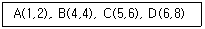
- (5, 5)
- (4, 4)
- (4, 5)
- (5, 4)
(정답률: 83%)
48. 래스터(Raster)데이터의 구성요소로 옳은 것은?
- Point
- Pixel
- Polygon
- Line
(정답률: 76%)
49. 디지타이징 시 (가)와 같이 입력되어야 할 선분이 (나)와 같이 입력된 오류를 무엇이라 하는가?
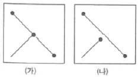
- Overshoot
- Undershoot
- Spike
- Dangle Node
(정답률: 78%)
50. 국토지리정보원의 수치지형도가 지닌 정보가 아닌 것은?
- 행정경계, 주요지명 관련 정보
- 주요 시설물, 건물 등의 분포
- 도로, 하천의 분포
- 토지의 지번 정보
(정답률: 66%)
51. 그림은 다익스트라 알고리즘을 이용한 최단경로 계산의 과정을 설명하고 있다. A에서 각 지접까지의 최소 소요 비용으로 틀린 것은? (단, 그림에서 경로에 부여된 숫자는 경로에 소요되는 비용임)
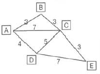
- B - 3
- C - 7
- D - 4
- E - 9
(정답률: 64%)
52. GIS 자료의 저장방식을 파일 저장방식과 DBMS(Data Base Management System)방식으로 구분할 때 파일 저장방식에 비해 DBMS 방식이 갖는 특징으로 옳지 않은 것은?
- 시스템의 구성이 간단하다.
- 새로운 응용프로그램을 개발하는데 용이하다.
- 자료의 신뢰도가 일정 수준으로 유지될 수 있다.
- 사용자 요구에 맞는 다양한 양식의 자료를 제공할 수 있다.
(정답률: 68%)
53. 그림과 같은 데이터에 대한 위상구조 테이블에서 ①과 ②의 내용으로 적합한 것은?
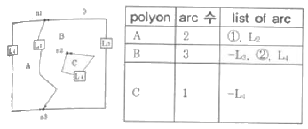
- ① : L1, ② : L2
- ① : L1, ② : -L2
- ① : -L1, ② : L2
- ① : -L1, ② : -L2
(정답률: 53%)
54. GPS의 측위 원리로 코드방식에 비해 정확도가 매우 높은 반면 측정시간이 다소 긴 방식은?
- 자외선 해석방식
- 저주파 해석방식
- 고주파 해석방식
- 반송파 해석방식
(정답률: 73%)
55. 지리정보시스템의 주요 기능에 대한 설명으로 옳지 않은 것은?
- 자료의 입력은 기존 지도와 현지조사자료, 인공위성 등을 통해 얻은 정보 등을 수치형태로 입력하거나 변환하는 것을 말한다.
- 자료의 출력은 자료를 보여주고 분석결과를 사용자에게 알려주는 것을 말한다.
- 자료변환은 지형, 지물과 관련된 사항을 현지에서 직접 조사하는 것을 말한다.
- 데이터베이스 관리에서는 대상물의 위치와 지리적 속성, 그리고 상호 연결성에 대한 정보를 구체화하고 조직화 하여야 한다.
(정답률: 78%)
56. 벡터구조가 래스터구조에 비해 갖고 있는 장점이 아닌 것은?
- 다양한 공간분석이 가능하다.
- 복잡한 묘사가 가능하다.
- 자료구조가 단순하다.
- 데이터 용량이 작다.
(정답률: 71%)
57. GIS의 응용시스템과 거리가 먼 것은?
- 토지정보시스템
- 환경정보시스템
- 토양정보시스템
- 회계정보시스템
(정답률: 84%)
58. “feature dissolve"에 대한 설명으로 옳은 것은?
- 공통이 되는 속성값을 기준으로 서로 구분되어 있는 피처를 단순화한 것이다.
- 사상(feature)을 일정한 규칙이나 기준에 의해 비율화한 것이다.
- 데이터를 설명하는 또 다른 데이터를 뜻한다.
- 공간적인 위치관계를 뜻한다.
(정답률: 54%)
59. 국가 위성기준점을 활용하여 실시간으로 높은 정확도의 3차원 위치를 결정할 수 있는 측량방법은?
- Static GPS
- DGPS 측량
- VRS 측량
- VLBI 측량
(정답률: 66%)
60. 다음 중 지도 매쉬업(mash-up)과 관련이 있는 것은?
- 웹서비스 지도와 부동산 정보의 결합
- 내비게이션의 최적 경로 계산
- 위성영상을 이용한 토지피복 분류
- 수치표고모형을 이용한 토공량 계산
(정답률: 46%)
4과목: 측량학
61. 그립의 측점C에서 점Q 및 점P 방향에 장애물이 있어서 시준이 불가능하여 편심거리 e만큼 떨어진 B점에서 각 T를 관측했다. 측점C에서의 측각 T'은?
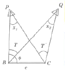
- T' = T + x1 - x2
- T' = T - x1 - x2
- T' = T - x1
- T' = T + x1
(정답률: 70%)
62. 삼각측량의 삼각망 구성 중 정확도가 높은 망부터 나열한 것은?
- 유심삼각망-사변형삼각망-단열삼각망
- 사변형삼각망-단열삼각망-유심삼각망
- 유심삼각망-단열삼각망-사변형삼각망
- 사변형삼각망-유심삼각망-단열삼각망
(정답률: 71%)
63. 1 : 50000 지형도를 보면 도엽번호가 표기되어 있다. 다음 도엽번호에 대한 설명으로 틀린 것은?
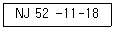
- 18은 1 : 250000 도엽을 28등분한 것 중 18번째 도엽번호를 의미한다
- N은 북반구를 의미한다.
- J는 적도면에서부터 알파벳으로 붙인 위도구역을 의미한다.
- 52는 국가 고유 코드를 의미한다.
(정답률: 71%)
64. 지구를 구체로 보고 지표면상을 따라 40km 를 측정했을 때 평면상의 오차보정량은? (단, 지구평균 곡률 반지름은 6,370km이다.)
- 6.57cm
- 13.14cm
- 23.10cm
- 33.10cm
(정답률: 55%)
65. 트레버스 측량에서 수평각 관측방법에 대한 설명으로 옳지 않은 것은?
- 교각법은 어떤 측선이 그 앞의 측선과 이루는 각을 관측하는 방법이다.
- 편각법은 어떤 측선이 그 앞 측선의 연장선과 이루는각을 측정하는 방법이다.
- 방위각법은 각 측선이 진북방향가ㅗ 이루는 각을 반시계 방향으로 관측하는 방법이다.
- 수평각을 관측하는 방법으로는 교각법이 많이 사용된다.
(정답률: 73%)
66. 관측값 l1= 50.25m (경중률 P=2), 관측값 l2= 50.26m (경중률 P2= 1), 관측값 l3= 50.27m (경중률 P3= 3) 일 때 최확값은?
- 50.266m
- 50.264m
- 50.262m
- 50.260m
(정답률: 54%)
67. 그림과 같은 트래버스에서 CD방위각은?
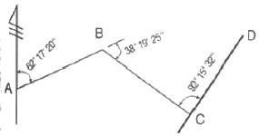
- 8° 20' 13''
- 12° 53' 17''
- 116° 14' 27''
- 188° 20' 13''
(정답률: 47%)
68. 간접 수준 측량 방법에 해당되지 않는 것은?
- 삼각수준측량
- 항공사진측량
- 교호수준측량
- 기압수준측량
(정답률: 55%)
69. 그림에서 등고선 AB간의 수평거리가 80m일 때 AB의 경사는?
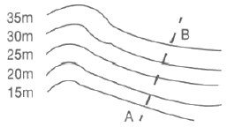
- 10%
- 15%
- 20%
- 25%
(정답률: 70%)
70. 평탄한 땅을 30m의 줄자로 관측한 결과 71.55m 이었다. 관측에 사용된 줄자가 30m에 대해 0.⑤m 늘어나 있었다면 실제의 거리는?
- 71.43m
- 71.48m
- 71.55m
- 71.67m
(정답률: 57%)
71. 각 관측을 위한 장비(데오도라이트)를 조정할 때 고려해야 할 수항으로 옳지 않은 것은?
- 수평축과 시준선은 직교하여야 한다.
- 수평축과 연직축은 평행이 되어야한다.
- 기포관축과 연직축은 직교하여야 한다.
- 시준선이 수평할 때 망원경 수준기의 기포가 중앙에 위치해야 한다.
(정답률: 61%)
72. 삼각측량의 목적에 대한 설명으로 가장 적합한 것은?
- 점의 위치를 결정하기 위한 것이다.
- 삼각망으 laus적을 구하기 위한 것이다.
- 변길이를 구하기 위한 것이다.
- 노선의 중심선을 확정하기 위한 것이다.
(정답률: 66%)
73. 레벨의 조정이 불완전하여 시준선이 기포관축과 평행하지 않을 때 표척눈금의 읽음값에 생긴 오차와 시준거리와의 관계로 옳은 것은?
- 시준거리와 무관하다.
- 시준거리에 비례한다.
- 시준거리에 반비례한다.
- 시준거리의 제곱근에 비례한다.
(정답률: 47%)
74. 수준측량의 용어 중 후시(back sight)에 대한 설명으로 옳은 것은?
- 표고를 알고 있는 점에 세운 표척의 읽은 값
- 표고를 알고 있지 않은 점에 세운 표척의 읽음 값
- 기준면으로부터 망원경의 시준선까지의 높이 값
- 측량 진행 방향의 반대쪽을 향해 표척을 세워 읽은 값
(정답률: 80%)
75. 공공측량 실시에 관한 설명으로 옳은 것은?
- 기본측량성과나 다른 일반측량성과를 기초로 실시하여야 한다.
- 공공측량시행자가 공공측량을 하려면 국토교통부령으로 정하는 바에 따라 미리 공공측량 작업계획서를 시,도지사에게 제출하여야 한다.
- 지방국토관리청장은 공공측량의 정확도를 높이거나 측량의 중복을 피하기 위하여 필요하다고 인정하면 공공측량 시행자에게 공공측량에 관한 장기 계획서 또는 연간 계획서의 제출을 요구할 수 있다.
- 공공측량시행자는 공공측량을 하려면 미리 측량지역, 측량기간, 그 밖에 필요한 사항을 시,도지사에게 통지하여야 한다.
(정답률: 55%)
76. 측량·수로조사 및 지적에 관한 법률에 따라 아래와 같이 정의되는 것은?
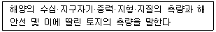
- 해양측량
- 수로측량
- 해안측량
- 수자원측량
(정답률: 65%)
77. 측량기준점에 대한 설명 중 옳지 않은 것은?
- 측량기준점은 국가기준점,공공기준점,지적기준점으로 구분하며, 세부 사항은 대통령령으로 한다.
- 국토교통부장관은 필요하다고 인정하는 경우에는 직접 측량기준점표지의 현황을 조사할 수 있다.
- 측량기준점표지의 형상, 규격, 관리방법 등에 필요한 사항은 대통령령으로 정한다
- 측량기준점을 정한 자는 측량기준점표지를 설치하고 관리하여야 한다.
(정답률: 50%)
78. 지도나 그 밖에 필요한 간행물(이하 “지도등”이라 표현)의 간행심사에 대한 설명으로 옳지 않은 것은?
- 기본측량 성과 등을 활용하여 지도등을 간행하여 판매 하거나 배포하려는 자는 국토교통부장관의 심사를 받아야한다.
- 지도등을 간행하려는 자는 사용한 기본측량성과 또는 측량기록을 지도등에 명시하여야 한다.
- 측량성과 심사수탁기관은 지도등의 간행심사를 할 때에는 도곽설정, 축척 및 투영, 지형·지물 및 지명의 표시, 주기 및 기호표시, 난외표시 등이 적정한지 여부를 심사한다.
- 간행심사를 받고 간행한 지도등을 다시 간행할 경우에는 재간행 지도의 사본 제출 등의 절차를 생략할 수 있다.
(정답률: 59%)
79. 지형도에 표기하는 삼각점 표고 수치는 m 단위로 소수점이하 몇 자리까지 표시하는가?
- 첫째자리까지
- 둘째자리까지
- 셋째자리까지
- 넷째자리까지
(정답률: 62%)
80. 기본측량 또는 공공측량의 측량성과 및 측량기록을 무단으로 복제한 자에 대한 벌칙 기준은?
- 3년이하의 징역 또는 3천만원이하의 벌금
- 2년이하의 징역 또는 2천만원이하의 벌금
- 1년이하의 징역 또는 1천만원이하의 벌금
- 300만원 이하의 과태료
(정답률: 62%)